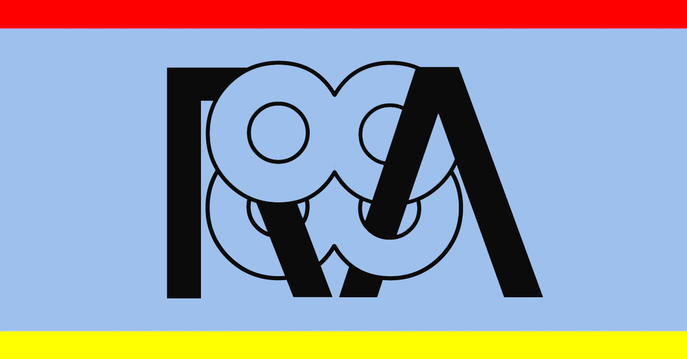

Radio 88
23.1.2019
Auditorium Fausto Melotti
Rovereto
18.00
Radio88 è un format sonoro eseguito dal vivo, derivato dall'integrazione di quattro modelli di comunicazione e condivisione: la sessione di ascolto guidata, il commentario, il radiodramma, la playlist. L'esecuzione di Radio88 prevede uno spazio allestito con dispositivi di amplificazione di varia tipologia tra i quali walkman, trasduttori di superficie, speaker.
Auditorium Fausto Melotti – Corso Bettini 43, Rovereto (TN)
Ingresso a offerta libera
Radio88 è un progetto a cura del collettivo MU:
Concept, traduzioni, testo: Clio Casadei
Playlist, progettazione dello spazio sonoro: Enrico Malatesta, Glauco Salvo
Organizzazione: Giovanni Lami
Radio88 viene presentato in anteprima all'interno della rassegna Musica Macchina, rassegna del Centro Servizi Culturali Santa Chiara di Rovereto dedicata alla ricerca sonora sperimentale e i linguaggi della musica elettronica contemporanea.